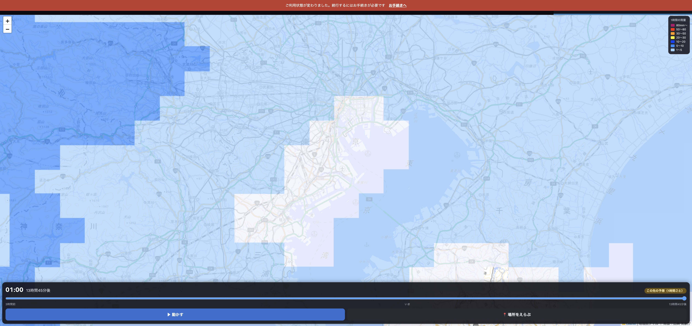

1時間先 → 明日の未明まで
つまみを右へ動かすと、夜勤の終わりごろの雨まで見えます。
伸びたのはここ
細かい5分きざみは1時間先まで。その先は1時間きざみになります
実際の画面

いちばん右まで動かしたところ。「01:00／13時間45分後／この先の予想（1時間ごと）」
粗くなる区間は、画面が教えます。細かいほうは青いラベル、1時間ごとの予想は黄色いラベルが出ます。
どこまで先が出せるかは気象庁の更新タイミングで13〜15時間先と変わるので、目盛りの右端にはそのときの実際の数字を出しています。
まとめ
- つまみの範囲が 3時間前 〜 約14時間先（全62コマ）になりました。
- 先の予想は気象庁の別の予報に自動で切り替わります。
- 取れないときは、これまで通り1時間先までで動きます。
- テスト1189件すべて通っています。
いま dev です。触ってみて、よければ「本番へ」と言ってください。